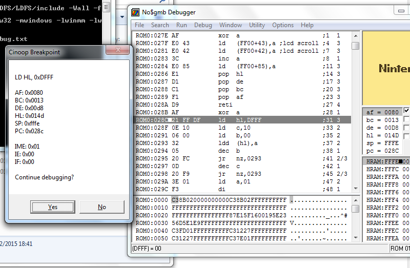
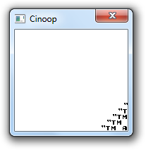
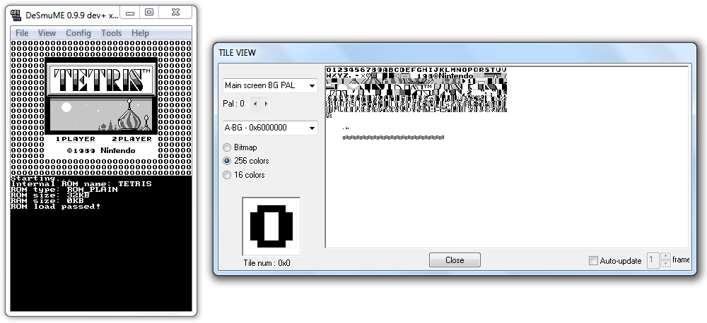
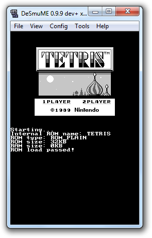

Writing a Game Boy emulator, Cinoop
I've always wanted to write an emulator from scratch, but I've held off for a long time because it's probably the most advanced programming project I've ever wanted to do.
Picking a system to emulate isn't an easy choice; the standard first emulator project seems to be a CHIP-8 emulator. Reading about CHIP-8 definitely helped me to understand a lot of emulation concepts, but it seemed a bit too basic. I felt that I got enough out of just reading through other people's emulators, and that writing my own would be a pointless exercise.
On the other hand, there's the NES and Game Boy; both of which seemed far too advanced for me!
Eventually, I decided to write a minimalist Game Boy interpreting emulator, without support for custom mappers or sound, (and probably many inaccuracies). I called the project Cinoop.
Cinoop is written in C and is open source. It can be run on Windows, DS, GameCube, 3DS, Linux based OSes, and PSP.
While I wouldn't recommend trying to learn about emulation from someone as inexperienced as me, I wanted to outline the process of starting an emulator for the first time, talk about which documents were most helpful to me, and also talk about some of the design choices I went through.
Starting off
I used my own library, LDFS, to create a window with a valid OpenGL context. A better choice would have been something more standard, and cross-platform, such as SDL, however, I went with LDFS just because I was familiar with it.
I then read through some Game Boy documents to get a better overview of the project. In hindsight, I should have spent much longer doing this so that I wouldn't have to keep looking things up later, but I was excited!
Most of the Game Boy specific code that I wrote in the beginning, such as loading a ROM, was based heavily on other emulators. I looked at how two or three different emulators did it, and then wrote it into Cinoop in my own style. It wasn't worth trying to write code on my own just yet, I needed to have a base to work with first, before I could experiment with doing things my own way.
Memory
Different sources can refer to memory regions differently. High RAM is sometimes called Zero Page Memory, Cartridge Data is sometimes just called ROM, and if a document just says RAM, it is usually refering to the Working RAM. Being aware of this is essential when reading through documents written by different people.
Registers
The Game Boy has eight 8 bit registers: A, B, C, D, E, F, H, and L, as well as two 16 bit registers: SP, and PC. Initially I implemented the registers like so:
struct registers {
unsigned char a;
unsigned char b;
unsigned char c;
unsigned char d;
unsigned char e;
unsigned char h;
unsigned char l;
unsigned char flags;
unsigned short sp;
unsigned short pc;
} extern registers;
While this model is fine for dealing with instructions that access the 8 bit registers individually, what I didn't realise is that often the 8 bit registers are grouped together to form the 16 bit registers: AF, BC, DE, and HL.
I revised my register structure to make accessing grouped registers easier:
struct registers {
struct {
union {
struct {
unsigned char f;
unsigned char a;
};
unsigned short af;
};
};
struct {
union {
struct {
unsigned char c;
unsigned char b;
};
unsigned short bc;
};
};
struct {
union {
struct {
unsigned char e;
unsigned char d;
};
unsigned short de;
};
};
struct {
union {
struct {
unsigned char l;
unsigned char h;
};
unsigned short hl;
};
};
unsigned short sp;
unsigned short pc;
} extern registers;
I used C11's anonymous structs and unions so that I could access individual registers, or grouped registers straight from the root structure: registers.a or registers.af for example.
This is one of the more unique aspects of my emulator; since most other Game Boy emulators were written in an older C standard, (or an undesirable alternative like C++), they didn't have access to anonymous structs or unions, which meant that they either had to access registers with a messy chain, like gameboy_proc->AF.b.h (this is how GBE accesses register a), or rely on bit operations.
Flags
The Game Boy has an 8 bit register which controls if the last operation resulted in zero, an underflow, a nibble overflow, or a byte overflow; refered to as the zero flag, the negative flag, the half carry flag, and the full carry flag, respectively.
One thing that initially tripped me up, is that I wasn't sure if I should update the flags after every instruction, or after just some, and if so, which ones (and how should I store this information). I eventually came across this great piece of documentation which describes in detail which instructions should update the flags, and to what values.
Implementing the CPU
Just to get things started, I went with the classic switch(instruction) { approach, in which all instructions are placed in the same function.
Whenever an unimplemented instruction was encountered, the register values were written to a debug file, along with the current instruction's hexadecimal value.
I chose to use the game Tetris for testing. Upon running it, I got a message telling me "Undefined instruction 0x00!".
To confirm that this was right, I ran the game in NO$GMB, which has an excellent debugger. Sure enough, the first instruction of Tetris is 0x00, which is a NOP.
I implemented the NOP instruction, and ran the game again to get the next, unsupported instruction. I continued with this method for a few more instructions, checking each time that the register values displayed by Cinoop matched those in NO$GMB.
Improving instruction handling
Looking up each instruction in NO$GMB, or an online table, started to get tedious. While I didn't want to write a fully fledged debugger, I wanted something slightly more substantial to work with.
I went away from the approach of doing everything directly in an instruction's code, and towards the idea of storing information about each instruction in a structure, so that common tasks could reuse the same code.
For example, rather than having each instruction's code responsible for retrieving its operands, I thought it would make more sense to store the operand lengths in the structure, and reuse the same code to retrieve operands for every instruction.
I also copied every instruction's disassembly into the structure:
struct instruction {
char *disassembly;
unsigned char operandLength;
void *execute;
//unsigned char ticks;
} extern const instructions[256];
...
const struct instruction instructions[256] = {
{ "NOP", 0, nop }, // 0x00
{ "LD BC, 0x%04X", 2, NULL }, // 0x01
{ "LD (BC), A", 0, NULL }, // 0x02
...
This, in combination with storing the operand lengths, made it incredibly easy to print out the instruction.
All I had to do now was run the game, and it would not only tell me the hexadecimal value of the unsupported instruction, but also the full disassembly of it.
Running the game now, gave me the message "Unimplemented instruction 0x06 (LD B, 0x00)!". This was all I needed to write the 0x06 instruction, I didn't have to stop and find it in an external program or piece of documentation:
// 0x06
void ld_b_n(unsigned char operand) { registers.b = operand; }
This greatly improved the speed at which I could implement new instructions, and I continued to write most of the CPU this way.
I also considered the idea of storing whether an instruction should update certain flags, in the instruction's structure, but decided against the idea because it would just over complicate the system, and would probably cause it to run slower.
Implementing the CPU wasn't particularly difficult, it was just time consuming. Most instructions are fairly straight forward, and some are identical other than the target register (INC A, and INC B for example). In addition, there are multiple NOPs (LD A, A, LD B, B, etc...).
However, there was one instruction which confused me for a while: DAA, which is used to display the score in Tetris. After looking at several other emulators, I managed to write my own implementation. One thing to note, is that unlike in the original Z80A CPU, the Half Carry flag is always cleared, which makes it a little bit simpler.
Real time debugging
Eventually, I realised that running the whole game until I got to an unimplemented instruction was not very flexible.
I could tweak the cpuStep function to give me some pseudo breakpoints:
if(registers.pc == 0x300) {
printRegisters();
}
But this still wasn't very easy to use. If there was a mistake in one of my instruction implementations, I would want to run the game step by step so that I could find it. To do this, I created a basic, real time debugger, which I could run alongside NO$GMB to check that the instructions were being executed correctly:

I was also able to add breakpoints in the readByte and writeByte function, which meant that I could activate a realtime, step by step, debugger on any condition I wanted. In combination with being able to run the game in NO$GMB, this turned out to be sufficient for debugging most problems.
Tilesets
Running what seems like an endless list of CPU instructions, to check everything is working, is important, but it becomes dull very quickly. Drawing the tileset would be my first, visual confirmation that Cinoop was actually working well enough to load graphics.
I ran Tetris through NO$GMB to see which instructions were copying the tileset into VRAM. The first function to load tiles starts at 0x2817, and ends at 0x282a.
I set a breakpoint in my emulator for the start of the function:
if(registers.pc == 0x2817) {
realtimeDebugEnable = 1;
}Of course, when I ran the emulator, it would exit before reaching this function since I hadn't implemented enough instructions; but I kept working, and eventually the breakpoint triggered! Then there were a few more instructions to implement to get through the function, before I could dump the first tile:
// End of tileset loading function
if(registers.pc == 0x282a) {
FILE *f = fopen("tile0.bin", "wb");
fwrite(vram, 16, 1, f);
fclose(f);
realtimeDebugEnable = 1;
}I compared this with NO$GMB's memory, and the data matched!
00 00 3c 3c 66 66 66 66 66 66 66 66 3c 3c 00 00The next thing to do was to dump the processed tile as well:
FILE *f = fopen("tile0.txt", "wb");
int x, y;
for(y = 0; y < 8; y++) {
for(x = 0; x < 8; x++) fprintf(f, "%02x ", tiles[0][x][y]);
fprintf(f, "\n");
}
fclose(f);
This was the result:
00 00 00 00 00 00 00 00
00 00 03 03 03 03 00 00
00 03 03 00 00 03 03 00
00 03 03 00 00 03 03 00
00 03 03 00 00 03 03 00
00 03 03 00 00 03 03 00
00 00 03 03 03 03 00 00
00 00 00 00 00 00 00 00To clarify the above image, let's replace "00" with " ", and "03" with "xx":
xx xx xx xx
xx xx xx xx
xx xx xx xx
xx xx xx xx
xx xx xx xx
xx xx xx xx
With the confidence that everything was working as it should, I copied the first 8 tiles onto the screen:
int i, x, y;
for(i = 0; i < 8; i++) {
for(x = 0; x < 8; x++) {
for(y = 0; y < 8; y++) {
framebuffer[i * 8 + x + y * 160].r = palette[tiles[i][x][y]].r;
framebuffer[i * 8 + x + y * 160].g = palette[tiles[i][x][y]].g;
framebuffer[i * 8 + x + y * 160].b = palette[tiles[i][x][y]].b;
}
}
}I let the game run a little bit further, and then copied as many tiles as would fit onto the screen:
// draw tileset to framebuffer as a test
int i;
for(i = 0; i < (144 / 8) * (160 / 8); i++) {
int x;
for(x = 0; x < 8; x++) {
int y;
for(y = 0; y < 8; y++) {
framebuffer[(i * 8 % 160) + x + (y + i * 8 / 160 * 8) * 160].r = palette[tiles[i][x][y]].r;
framebuffer[(i * 8 % 160) + x + (y + i * 8 / 160 * 8) * 160].g = palette[tiles[i][x][y]].g;
framebuffer[(i * 8 % 160) + x + (y + i * 8 / 160 * 8) * 160].b = palette[tiles[i][x][y]].b;
}
}
}Maps
My initial attempt at reading maps resulted in this:
I'm not sure if this was caused by a problem with the GPU tutorial that I followed, or my implementation, but changing the following line:
mapOffset += ((gpu.scanline + gpu.scrollY) & 255) >> 3;to:
mapOffset += (((gpu.scanline + gpu.scrollY) & 255) >> 3) << 5;fixed the problem. My emulator could now reach the copyright screen of Tetris!

Getting past the copyright screen
Cinoop was getting stuck in a loop, and not progressing past the copyright screen. After some brief debugging, I found that blocking any writes to the first byte of HRAM (0xff80) would allow the loop to be completed:
void writeByte(unsigned short address, unsigned char value) {
// Block writes to ff80
if(tetrisPatch && address == 0xff80) return;It wasn't my intention to use game specific patches rather than sorting out bugs properly, but I assumed that if I temporarily enabled this patch, the problem would eventually sort its self out as I improved Cinoop (which it did).
After temporarily fixing the previous looping problem, I was presented with another; the game was repeating the following three instructions infinitely:
ld a, 0xff80
and a
jr z
I realised that it was probably waiting for the value to be written to by an interrupt, so I dumped the interrupt enable register: 0x09, meaning that both VBlank and Serial interrupts were enabled ((1 << 0) | (1 << 3)), since it probably wasn't dependent on there being a Serial interrupt, I assumed that my VBlank code was wrong.
Sure enough, it was! After correcting the VBlank interrupt handler, I was presented with a few more unimplemented instructions, and eventually, Cinoop made it to the Tetris menu!

Porting
To make Cinoop more useful, I decided to port it to several other systems.
DS
The first system I ported Cinoop to was the DS, which really didn't take long since I am so familiar with it.
I started by rendering to the DS in framebuffer mode, which can be done as follows.
videoSetMode(MODE_FB0);
vramSetBankA(VRAM_A_LCD);
VRAM_A[x + y * 256] = RGB15(red, green, blue);This was good at first because it meant that I could just reuse the Windows rendering code, so I managed to get Cinoop up and running fairly quickly:
However, the DS already has support for tiles and sprites; rendering to a framebuffer is slow.
I revised the code to use the DS' native tile rendering. It ran faster than the framebuffer renderer, but it had some minor graphical glitches on some tiles (happened on real hardware as well as on emulators):

I'm not exactly sure what caused this, but I think it was because I was writing to VRAM too frequently. I fixed the issue by writing to an array in RAM instead, and setting a dirtyTileset variable. During the DS' VBlank, I checked to see if the tileset had changed, and if so, copied the tiles from RAM into VRAM:
void dsVblank(void) {
if(dirtyTileset) {
memcpy(bgGetGfxPtr(layer), tiles, 160 / 8 * 144 / 8 * 32);
dirtyTileset = 0;
}
}
int main(void) {
irqSet(IRQ_VBLANK, dsVblank);
...
void updateTile(unsigned short address, unsigned char value) {
...
#ifdef DS
dirtyTileset = 1;
#endif
}
The way that the DS video modes are designed, it is not possible for sprites and backgrounds to share a tileset, like the Game Boy does. As a result of this, I had to copy the tileset into both the background, and sprite memory in the dsVblank routine.
Finally, I wrote a plain black tile into VRAM, and used it for the border. With the finalised tile rendering system in place, the emulator had no graphical artifacts, and ran noticeably faster (but still not full speed).
GameCube
The GameCube isn't a system that I have ever programmed for, so I decided that this would be a good project to start with. While there isn't nearly as much documentation as there is for the DS, it was still easy to get started with thanks to libogc and devkitPPC.
Unlike x86 and the DS, the GameCube's PowerPC processor is big endian. This was a minor annoyance, but was trivial to account for:
#ifdef WIN
#define LITTLE_E
#endif
#ifdef DS
#define LITTLE_E
#endif
#ifdef GC
#define BIG_E
#endif
struct registers {
struct {
union {
struct {
#ifdef LITTLE_E
unsigned char f;
unsigned char a;
#else
unsigned char a;
unsigned char f;
#endif
};
unsigned short af;
};
};
struct {
union {
struct {
#ifdef LITTLE_E
unsigned char c;
unsigned char b;
#else
unsigned char b;
unsigned char c;
#endif
};
unsigned short bc;
};
};
...The GameCube emulator I used for testing, gcube, doesn't support reading files from the memory card, so I had to hardcode the Tetris ROM into the binary, which was another minor annoyance. With all that done, I had Cinoop running on the GameCube!

3DS
3DS development is a lot harder than DS development since it has had far less time to mature. There is far less documentation, and it feels clunky to develop for as a result of this.
For example, the DS' libfat supports file reading using the standard C procedures (fopen et al.), however the 3DS' ctrulib has its own special way to read files (FSUSER_OpenFileDirectly et al.).
The 3DS scene is very chaotic at the moment; there are multiple launchers which you should support when releasing something:
- 3ds - Flashcards
- 3dsx and smdh - Homebrew Launcher
- cia - Custom firmwares
- elf - Emulators
Also note that some applications are released as a ".dat" ROP chain, since they require execution under a specific exploit's environment (usually for access to certain system calls).
3DS emulation also isn't very good at the moment, so I had to test on real hardware, which was quite time consuming.
Apart from these few annoyances, the 3DS port didn't take too long. In the future, I hope to add support for rendering sprites above the background using 3D.
Ubuntu
I am a Windows user. I very rarely touch a Linux based machine, but since Cinoop had suddenly become a case of "let's see how many systems I can port this to", I decided to make an exception.
The first distro I tried was Fedora. I didn't like it, and couldn't get anything to work.
I then tried Ubuntu. It was a much better user experience than Fedora!

PSP
PSP was by far the easiest platform to develop for that I was new to.
I set up the Minimalist PSP SDK, and the PPSSPP emulator, and was able to port Cinoop within a single day!

PS2
I had plans for a PS2 port of Cinoop, but I gave up due to the many difficulties of PS2 development.
The first reason for this is because of the decentralised nature of the scene; whatever information about PS2 development that is still available is scattered across the internet like Lego in a child's room.
I tried to install the ps2dev toolchain from GitHub; I tried it on Windows 7, Ubuntu 14.04, and Mac OS X Lion. But, whatever I did, I ended up with numerous compile errors, so I just gave up.
For anyone who can actually manage to setup a PS2 development kit, there is no easy way to plot pixels directly to a framebuffer, like there was for every other system I ported Cinoop to.
There's no way to write directly to the frame buffer because the VRAM is not within EE RAM and isn't mapped to EE memory space. The only way is to have a local framebuffer within EE RAM, which you can transfer to the real framebuffer within VRAM via DMA at every frame. The VRAM is actually 4MB of eRAM within the GS.
To understand how this is to be done, it's important to first understand how to upload textures during a program's runtime. The frame buffer is basically a very large texture. Some graphics libraries (e.g. gsKit) have nice functions for facilitating processes like this.
I think that it may be possible to transfer bitmap data directly to the frame buffer on the GS because I think that FMCB (and probably some earlier homebrew demos) does that for drawing its boot logo. But so far I've only transferred bitmap data to the GS as texture data (to a buffer within VRAM which is outside of the frame buffer), which is later drawn onto the frame buffer as a full-screen 2D-texture.
You may be now wondering why it's so difficult to do something as simple as updating the frame buffer. Well, it's because the PlayStation 2 was primarily made to support 3D rather than 2D. As mentioned above, the VRAM is within the GS, which is a separate processor from the EE.
So, I just gave up with a PS2 port.
Mac OS X
I also had plans to port to Mac OS X, but like with PS2, this proved too difficult.
The PS2 has reasons for being difficult to develop for: it is over 15 years old, and the tools are developed unofficially by hobbyists. Whereas, Mac OS X is an actively maintained operating system, from a major corporation; it has no excuse for being impossible to develop for.
Mac OS X development suffers from the problems of the opposite end of the spectrum to PS2 development, everything is centralised to Apple, which makes it (in my experience) even harder to develop for than PS2. You have to create an account to download any development tools, and if something doesn't work (which happens a lot), there are no alternatives, you're stuck!
To install a C compiler (with make and some other tools), you must first install Xcode (which is a 5GB download), and then click on "Install Command Line tools" which is in the settings somewhere. There is probably a way to install a C compiler without Xcode, but it certainly isn't clear.
The C compiler included with "Command Line Tools" is called gcc; any sane person would assume that this is the GNU Compiler Collection, well, stop making assumptions, because it seems that nothing in Mac OS X is intuitive or self explanatory. Despite the name, the "gcc" that Xcode installs is actually Clang from LLVM, not GCC from GNU!
Regardless, let's try compiling and running a simple C template:
gcc main.c -c -o main.o
gcc main.o -o main
./mainThis gives the output: "cannot execute binary file".
I looked at the file main and it was empty. I tried adding sudo before the commands, and got the same output!
I understand that this is clang, not gcc, but if they have the nerve to call it gcc, it should at least be compatible with building the most basic C program possible using the same commands as gcc; I received no warnings or errors when trying to compile, it just didn't work.
The official C compiler doesn't work, what a joke.
Final thoughts
Feel free to browse through the source code of Cinoop. Although Tetris is probably the only game that is playable, I have still learnt a lot from this project, and I hope to improve on it in time.
During most of the development, I used NO$GMB to confirm that my emulator was working, however, bgb is more accurate, is still being actively maintained, and has a debugger which is just as good as NO$GMB's; I would recommend using it over NO$GMB.
Thanks
Imran Nazar, Chuck Mason and Steven Fuller, Martin Korth, beware, and nitro2k01.